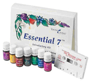
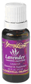
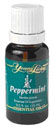

~ Gift Ideas ~
Did you know that essential oils from plants make wonderful gifts? Essential oils have amazing natural healing power if you buy the pure undiluted non polluted ones. They increase the oxygen levels, and the wonderful negative ion levels; many are antibacterial, antifungal, antimicrobial, antitumoral, antiviral, antiparasitic. Many relieve tension and stress, many relax, some regenerate nerves, some detoxify, some help bring joy and peace, some relax muscles. And the list goes on and on! They are God's medicine cabinet and God's first aid kits in a bottle.
Premium Starter Kit
Enroll with the ultimate Young Living product and business experience! An extraordinary value that offers a comprehensive introduction to the power of essential oils, the Premium Starter Kit is the perfect option for those who are serious about transforming their lives.
Kit includes: Everyday Oils collection, Home Diffuser, Welcome to Young Living booklet, Essential Oils at a Glance user’s guide, Distributor Resource Guide, S.E.E.D. Sharing for Success booklet, Stress Away 5-ml, AromaGlide Roller Fitment, two Lavender Sample Packets, two Peppermint Sample Packets, two Peace & Calming Sample Packets, two Lemon Sample Packets, two Thieves Sample Packets, Sample Packet Business Cards, two NingXia Red 2-oz. samples, Distributor Agreement, Product Guide and Product Price List. NOTE: Due to high demand and low inventory of the Home Diffuser, the diffuser you receive may not be the exact model pictured but will be an equivalent model. We apologize for any inconvenience.
Everyday Oils Collection
Ensure you'll always have the benefits of Young Living's therapeutic-grade essential oils on hand with our brand new, 10-oil Everyday Oils collection.
The oils in this select collection will provide ongoing support for your home, health, and body. EnJoy the relaxing benefits of lavender and Peace & Calming, the cleansing power of Thieves and Purification, the comforting touch of Valor and PanAway, the uplifting properties of the newly added Joy™ essential oil blend, and much more.
Everyday Oils Essential Oil Collection includes:
1 - 5 ml Joy™
1 - 5 ml Frankincense
1 - 5 ml Lemon
1 - 5 ml Lavender
1 - 5 ml Peppermint
1 - 5 ml Purification
1 - 5 ml Panaway
1 - 5 ml Peace & Calming®
1 - 5 ml Thieves®
1 - 5 ml Valor®
|  |
Essential 7 Kit
Was created so that anyone could immediately use and appreciate the benefits of our most popular therapeutic-grade essential oils and blends. The single oils may be used as dietary supplements.
All of these oils may be diffused, applied on feet, added to the Bath and Shower Gel Base or Epsom salts to be used in bathwater, applied topically, or used for body massage.
Comes with a Missing Link cassette.
Contains: Three Single Oils (5ml bottles): Lavender, Peppermint & Lemon. Four Blends (5ml bottles): Joy, PanAway, Peace & Calming and Purification.
|
 |
LAVENDER - 15 ML
(Lavandula angustifolia) has a fresh, sweet, floral, herbaceous aroma that is soothing and refreshing. Because it is the most versatile of all essential oils, no home should be without it. It is great for winding down before bedtime, yet has balancing properties that make it just as beneficial for boosting stamina and energy.* Therapeutic-grade lavender is highly regarded for skin and beauty. It may be used to cleanse cuts, bruises, and skin irritations. The French scientist Rene? Gattefosse? was the first to discover these properties when he severely burned his hands in a laboratory explosion. Using lavender oil, he noticed a remarkable healing soon afterwards. Lavender has an approximate ORAC of 3,669 (TE/L). TE/L is expressed as micromole Trolox equivalent per liter.
|
 |
PEPPERMINT - 15 ML
(Mentha piperita) has a strong, clean, fresh, minty aroma. One of the oldest and most highly-regarded herbs for soothing digestion, it may also improve gastric motility and digestive efficiency.* Jean Valnet, M.D., studied peppermint's effect on the liver and respiratory systems. Other scientists have also researched peppermint's role in improving taste and smell when inhaled. Dr. William N. Dember of the University of Cincinnati studied peppermint's ability to improve concentration and mental activity. Alan Hirsch, M.D., studied peppermint's ability to directly affect the brain's satiety center, which triggers a sensation of fullness after meals. Peppermint has an approximate ORAC of 373,455 (TE/L)
|
See us for Young Living catalogs to order. To be able to order Essential Oils for yourself at wholesale prices, call 1-800-371-2928. Distributor sign-up fee is $50.
Sign-up fee includes a fabulous black durable carrying bag, plus 2 samples of essential oils and samples of the skin care, 5 full-color catalogs to share with friends and family, several CDs for training, and price lists. Use member# 611140 when signing up.
"The news isn't that fruits and vegetables are good for you.
It's that they are so good for you they could save your life."
By David Bjerklie
TIME Magazine - October 20, 2003, p. 50
Disclaimer Notice:
The information presented on this website is for educational purposes only,
and not intended to replace advice from a licensed healthcare professional.
If you are having symptoms you cannot explain, you should consult with a
licensed healthcare practitioner for diagnosis and treatment.
Call us today!
(970) 250-5612
Kenton & Joan Miller
Certified Natural Health Counselors